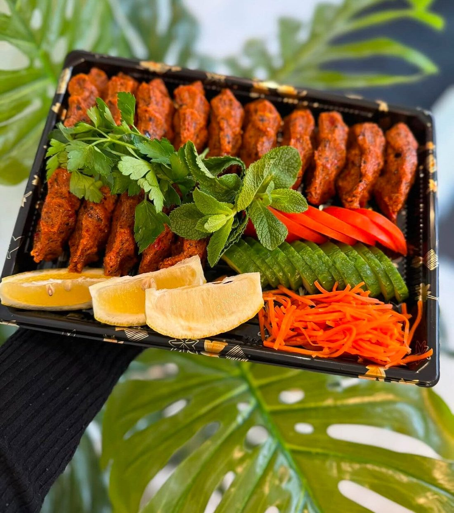
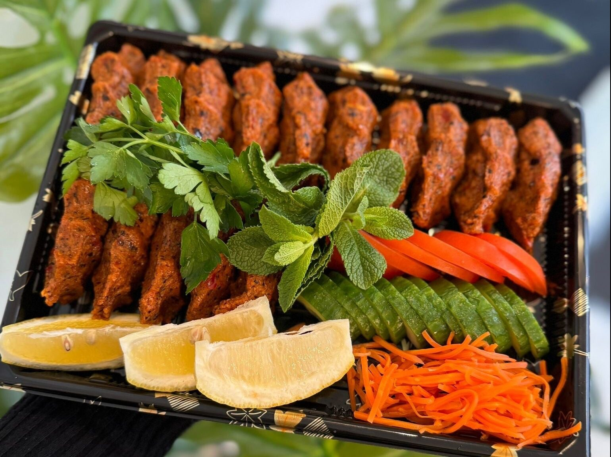
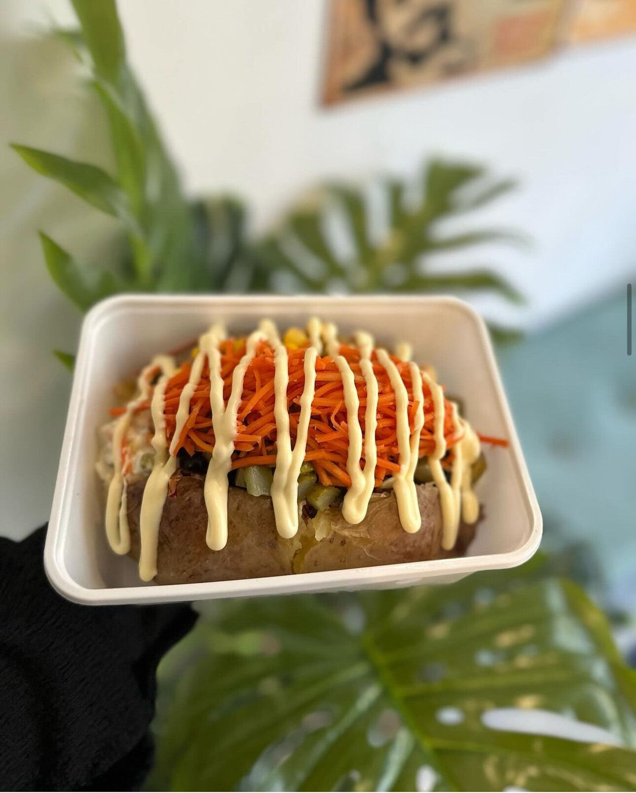
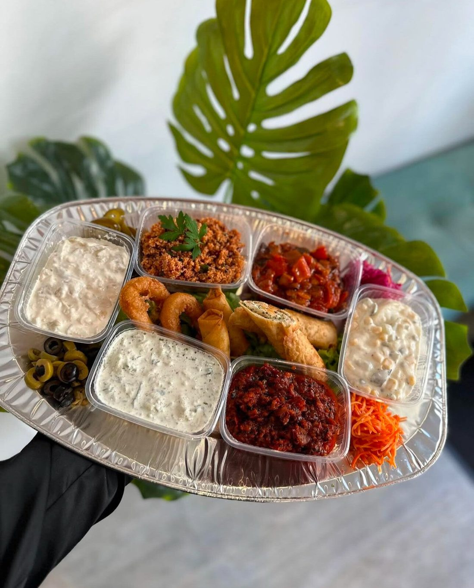
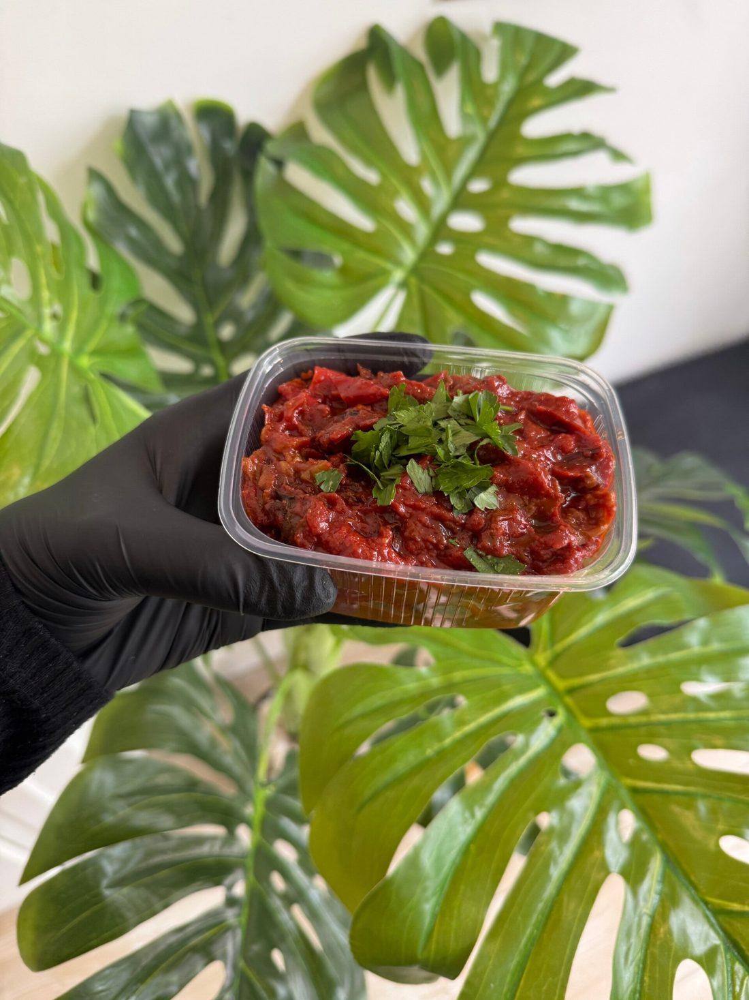
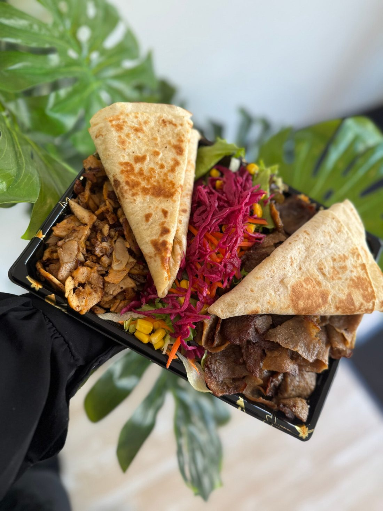
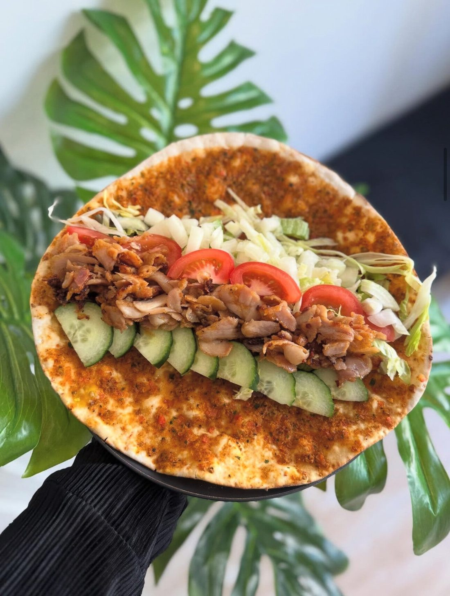
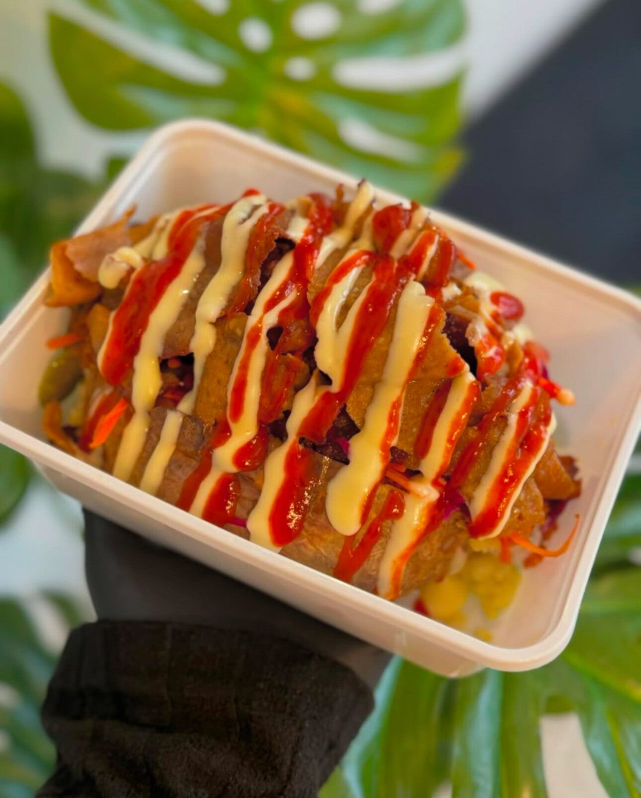
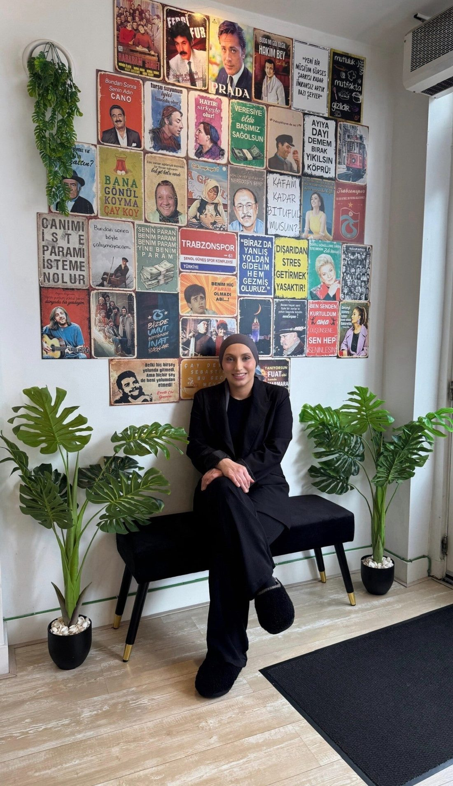

Çiğköfte schaal
Met lavaş brood, sla, turşu, groente en saus. Van small tot family.
v.a. € 10,50Meer info

Turks-mediterraan eten aan de Haagdijk in Breda. Çiğköfte, kumpir en huisgemaakte tapenades, elke dag vers bereid. Bestel online of haal het zelf bij ons op.
Smaken die je niet overal tegenkomt. Klik op een gerecht voor alle keuzes en prijzen.

Met lavaş brood, sla, turşu, groente en saus. Van small tot family.

Gevulde aardappel met romige, kazige puree en jouw toppings.

Koude en warme voorgerechten voor 2 personen, met brood.

Om mee te dippen of als bijgerecht. Altijd met brood.

Döner kebab en kipdöner met Turkse rijst en lavaş.

Classic, met kipdöner of met döner kebab.

Een gevulde aardappel met romige, kazige puree, afgemaakt met toppings en saus. Je stelt hem zelf samen.
“Helemaal weggeblazen door de keuken van Nayino! Trouwens, niet alleen de keuken, maar vanaf binnenkomst al. Je wordt zo vriendelijk te woord gestaan én het eten is ontzettend smaakvol. Absolute aanrader, hier kom ik zeker terug.”
“We hebben het eten opgehaald bij een heel charmant restaurantje en de service was geweldig! Het eten was heerlijk en we zullen er zeker vaker terugkomen – het is echt de moeite waard!”
“Het Eten was lekker En goed warm Smaakte goed 😊”

Nayino is van Aleyna Avci, geboren en getogen in Breda. Ze groeide op met de smaken van de Turkse keuken en de gastvrijheid van Brabant. In januari 2023, op haar 23e, opende ze Nayino aan de Haagdijk.
Hier vind je geen standaardmenu. Alles wordt dagelijks bereid met verse, pure ingrediënten, en je haalt je bestelling op zonder haastgevoel.
“Gemaakt voor iedereen die houdt van écht en eerlijk eten.”
Bestel online, of bel of app ons. Daarna staat je eten klaar aan de Haagdijk.
| Maandag en dinsdag | Gesloten |
| Woensdag t/m zondag | 15.00 – 22.00 |
Parkeren aan de Haagdijk: betaald van 09.00 tot 22.00 uur (zondag 12.00 – 18.00). Na 18.00 uur gratis, behalve op koopavonden.